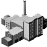

Sei un amministratore pubblico e vuoi sapere quanto costa e come aderire ad Open municipio
Dentro Open municipio viene ricostruita e contestualizzata tutta l'attività politico-amministrativa della tua città, puoi valorizzarla motivandone le scelte in un contesto neutrale in cui queste assumono un valore reale, tangibile. Con Open municipio azzeri in un colpo solo le barriere di accesso agli atti, la sfiducia e l'antipolitica, applicando realmente la trasparenza con uno strumento di partecipazione diretta che vale più di mille campagne di comunicazione, poiché sono i dati reali a parlare e diventano la base giusta su cui costruire il dibattito con la cittadinanza.
Aderire ad Open municipio è molto semplice. Il contributo delle amministrazioni consiste:
- nel fornire i dati aggiornati sui lavori di giunta e consiglio in formato xml. Dai un’occhiata allo schema, e se la cosa è complicata, parliamone, abbiamo diverse soluzioni a supporto delle amministrazioni.
-
nel versare un canone annuo estremamente contenuto per coprire i costi di gestione della
piattaforma. L'obiettivo economico del progetto, infatti, è ottenere la sostenibilità dei costi di gestione e di mantenimento della piattaforma, non il profitto. Così per far fronte ai costi, proponiamo ai comuni un modello di partenariato non commerciale che prevede la compartecipazione agli sforzi per perseguire una utilità pubblica.
Comuni di fascia A fino a 50.000 abitanti |
 Comuni di fascia B da 50.001 a 200mila abitanti |
Comuni di fascia C oltre 200mila abitanti |
|
| Prezzo di avviamento (una tantum) |
3.000 euro | 4.000 euro | 5.000 euro |
| Canone annuo per il mantenimento |
5.000 euro | 8.000 euro | 12.000 euro |
Il prezzo di avviamento comprende le attività necessarie per l’apertura del sito di un singolo comune:
- procedura per lo scambio e aggiornamento dei dati tra i sistemi gestionali del comune e la piattaforma Open municipio
- verifica dei dati
- catalogazione degli atti - di quelli già presenti da inizio della consiliatura - secondo gli "argomenti" di Open municipio
- pubblicazione del sito dedicato al comune
Il canone annuo comprende tutte le attività di gestione tecnica e dei contenuti del sito dedicato al comune:
- hosting e manutenzione ordinaria ed evolutiva della piattaforma
- hosting e manutenzione ordinaria ed evolutiva dell'istanza dedicata al singolo comune
- catalogazione quotidiana dei nuovi atti presentati negli "argomenti" di Open municipio
- moderazione dei contenuti inseriti dagli utenti
Sei un cittadino o un’associazione di cittadini e pensi sia arrivato il momento di “aprire” la tua città
Crea un contatto con un amministratore del tuo comune per presentare il progetto Open municipio. Noi ti supportiamo con un po' di materiali:
- Per vedere Open municipio in funzione non c'è niente di meglio che navigare il sito di Udine. E se hai bisogno di una sintesti del progetto, puoi scaricarla qui.
- Puoi supportare il tuo rappresentante nella valutazione dell'investimento anticipandogli il documento di adesione e lo schema dei dati
- Se il tuo comune ha difficoltà a predisporre i dati nel formato giusto, parliamone insieme, perché abbiamo soluzioni da proporre.
- Infine, se hai bisogno di chiarimenti o supporto nella presentazione, contattaci: promuovere Open municipio è il nostro primo interesse.